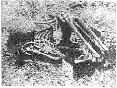
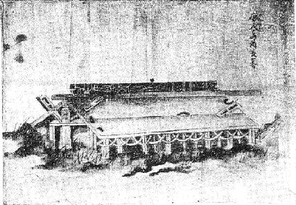
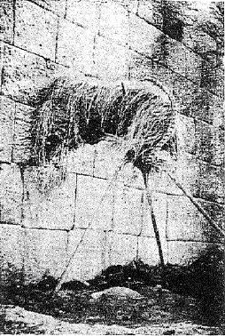
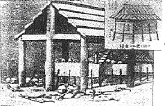

| 本朝変態葬礼史 | |
| 中山 太郎 | |
| (2012) | |
本朝変態葬礼史
中山太郎
我国で古く屍体を始末することはハフル（葬）と云うていたが、この語
には、二つの意味が含まれていた。即ち第一は投
るの意（投げ棄てる事）で第二は屠
るの意（截り断つ事）である。しかして時間的に言えば投
るが先で屠
るが後なのである。
須佐之男命が古代の民族の為めに、柀
の木を以て奥津
棄戸
に将臥
さむ具
――即ち棺箱を造ることを誨
えたとあるが、それが事実であるか否かは容易に判然せぬ。それと同時に奥津は沖津の意であるから、古代には水葬のみで土葬はなかったと云う説もあるが、これは置
つと解するのが正当ゆえ賛成されぬ。さらに棄戸
とは死人を厭い、死者があると住宅を棄てて他に移ったので、かく言うたのであると説く学者もあるが、これもただ棄て去ると云うほどの意味に解すべきだと考えるので、にわかに首肯することが出来ぬのである。全体我国にも古代においては、屍骸を保存せずに投棄した習俗のあったことは、葬儀をハフルと称した点からも推察されるのである。遊牧期にある民族としては、こうした習俗は当然のことであって、実際を言うと水草を趁
うて転々した時代においては、屍体のことなどに屈托しては居られなかったに相違ない。これに加うるに宗教意識は低劣であり、祖先崇拝の道徳も発生せなかったのであるから、屍体の始末は極めて簡単に取片付けられたものと見て差支
えあるまい。換言すれば霊肉を一元視した原始時代にあっては、屍体は野か山かまたは池か河かに投棄して顧なかったのであろう。出雲の大社の国造神主が死ぬと、直ちに死骸を赤めの牛の背に縛りつけ、菱根
の池へ沈める葬法は、かなり後世まで行われていたようであるが、これなどは或いは原始期の屍体投棄の習俗を残したものとも考えられるのである。それが農耕期に入り住所が固定し、邑落
として社会的生活を営むようになって来ると、宗教意識も発達し祖先崇拝の道徳も称導され、さらに肉体は腐朽するも霊魂は存在すると云う、即ち霊肉を二元的に観るようになって、ここに始めて屍体を保存する必要が起り、従ってこれに伴う種々なる葬法が発明されるに至ったのである。復言すればこの時代の民族は、屍体（もし屍体が水死または焼死等でないときは、死者の着ていた衣服または生前使用した器具）を保存して置けば、その霊魂は何時までもそこへ帰って来るものだと信じていたのである。それとともに死者は霊魂となって夜見ノ国（我国では霊魂は地下へ往くものだと信じたのが古く、天上に昇ると考えたのはその後である）へ赴き、ここで生ける時と同じような生活を営むものだと信じたのである。石廓や石棺を用いる厚葬が工夫され、使用の器具が副葬されたのもみなこれが為めである。
そしてこうした観念のもとに出発した我国の葬儀にあっても、その時代の信仰により、またはその地方の習俗により、多種多様なる変態的葬礼が発生するに至った。限られた紙幅とてその委曲を尽くすことは思いも寄らぬが、重なるものについて記述する。
殉死のさかんに行われた時代にあっては、それは必ずしも変態の葬礼とは言えぬけれども、それかと言うて常態とも想われぬので略述する。魏志の倭人伝によると女酋卑弥呼が死んだ折に、奴婢百余人を殉葬したとあるが、この女酋は我国の文献には載せてないのでしばらく措き、殉死の我が記録に見えた初めは垂仁紀の左の記事である。
二十八年冬十月、天皇の母弟倭彦命
薨
せぬ。十一月倭彦命を身挟桃花坂
に葬る。こゝに近習の者を集へて、悉に生きながらにして陵域に埋め立つ。数日死なず、昼夜泣
ち吟
ぶ。遂に死して爛臰
りぬ。犬烏聚
り噉
む。天皇此の泣
ち吟
ぶ声を聞きて、心に悲傷
有
す。群卿に詔
して曰く、それ生くるときに愛
みし所を以て亡者
に殉
はしむ。これ甚だ傷
なり。それ古風といへども良からずば何ぞ従はむ。今より以後、謀りて殉
はしむることを止めよ。
その後三十二年秋八月に、皇后日葉酢媛命
が薨去せられた折に、またも殉死のことが問題となり、詮議の結果として野見宿禰
に命じて埴輪土偶を作らせ、これを陵域に立てて殉死の男女に代えることとした。しかしながら我国の殉死は、これに由って根絶したものではない。時代の好尚と死者の身分とにより、多少の相違は在ったけれども、はるかに後世まで習俗として行われたものである。播磨風土記の飾磨
郡貽和
ノ里の条に、雄略朝に尾治連の祖先である長日子
と、その善婢と愛馬との墓が三つ並んでいるが、これは長日子の死に妾と馬とを殉葬したものである。さらに孝徳紀の大化二年の条には、『人死亡
る時に、若くは経
きて自ら殉
ひ、或は絞きて殉はしめ、及び強
ちに亡
し人の馬を殉へるが如き旧俗は、皆悉く断
めよ』とあるのは、まだこの時代に殉死がさかんに行われ、或いは自発的にまたは強制的に、この蛮習の存したことが窺われる。殊に注意すべき点は死者の愛馬を殉葬したことであって、前掲の播磨風土記の如き陋俗までが、なお依然として行われていたことである。今に神社へ絵馬を納める源流は、即ちこれに出発しているのである。そして令集解の古註によると、信濃国では夫が死ぬと妻を殉死させたと載せてあるのを、粗忽の者は姥捨山の派生伝説位に考えているようであるが、これは決して左様なものではなく、古く我が全国に渉って行われた殉死の弊風が、たまたま同国に残存したものと見るべきである。妾と馬とは殆ど世界を通じて殉死の先駆者であるが、これに次いでは妻であった。しかも古代には老人を冷遇する習俗が濃く、殺老は左迄
に珍らしい事ではなかった。そしてこの老人を殺すことが、食人の嗜好から出たものか、それとも食料の欠乏に由ることかは異説があるも、我国においても殺老から棄老となり、さらに隠居と云う制度を生むようになったことは、しばしば疑いのない事実と見て差支えないようである。こうした情態に置かれた社会にあっては、幾度か殉死を禁ずる法令が発せられても、なおこれを払拭することが出来なかったのである。そして武家階級が起るようになり、主従道徳が強調さるるに随い、俗に『追い腹』と称してこれを行うた。時勢の降
った徳川期にあっても、将軍とか大名とかが死ぬと、家臣は主従三世の武士道を重んじ、三人または五人の殉死者のあるのが尋常とされていた。三重県津の城主であった藤堂高虎が死んだ折に、十八名の家臣が追い腹を切り、その墳墓が主人の塋
域を囲んで並んでいるのを見ると、誰か民俗の永遠性を想わぬ者はなかろうとさえ考えるのである。
古代には屍体を埋めるときは、概して屈葬と称して首から脚へかけ縄を以て強く縛るのが習俗となっていた。そしてこの葬法は近年まで残っていた。石川県羽咋
郡富永村では、死者を納棺する際に藁縄、或いは白布を以て屍体を緊縛した。これを極楽縄と称し老人は自分で拵
えて置いたとある。老先の短い年寄達が、やがては自分が屍体となって縛られて往く縄を、用意する心持を察しると何とも言われぬ淋しさを感じるのである。沖縄でも屍体を蒲葵
の縄で縛り埋めたが、硬直せる屍体の膝を折ることなどもあって、実に惨たらしいものであったと聴いている。
それでは何が故にこうした惨酷なる処置を屍体に加えたかと云うに、これにはまた段々と説明すべき理由が在って存したのである。古代人が死霊を恐れたことは、現代人が想像するよりは幾十倍の強烈さであった。眼に見える猛獣や毒蛇の害なれば、何とかして防ぐことも出来たであろうが、眼にも見えず手にも取れぬ死霊――殊にそれが変死を遂げた者の凶霊にあっては、迷信が深かっただけに、さらに思索が進まなかっただけに、これが依憑なり襲来なりを防ぐことが出来なかったのである。加うるにこの時代にあっては悪疫の流行も思わぬ怪我も、この死霊や凶霊の為す仕業と考えていたのであるから、その死霊の発散して疎び荒ぶることを恐れて、かくは屍体を緊縛するようになったのである。我国で古く鎮花祭
と云うのを、桜の花の散る頃に行うたのは、あたかもこの時分に死霊や疫霊が発散するので、それを防ぐための祈禱に外ならぬのである。
こうした民族心理は、変死を遂げた者、または叛臣や逆徒等の兇暴性を帯びた者の屍体を埋葬するに、さらに一段の惨酷を加えたことは、当然の帰結であった。そしてその方法は変死者なれば屍体を逆
にして、橋の袂か四ツ辻に埋めたものである。これはこうした場所ならばたえず人馬の往来があるので、死霊が発散せぬよう踏み固めると信じたからである。沖縄県では近年まで変死者をこうして取扱ったもので、内地の各地に逆
に歩く幽霊が出ると云う話のあるのも、また辻祭や辻占と称して四ツ辻が俗信と深い関係を有しているのはこれが為めである。宇治の橋姫の怪談などもこの習俗の伝説化されたものである。それから兇暴者の屍体は、これを幾つかに裁断して各所に分葬することとなっていた。崇峻紀に物部守屋の資人
である捕鳥部万
が官軍に抗し、自ら頸を刺して敗死したが、朝廷ではその屍体を八段に斬り、八ヶ国に散梟
したと載せている。平将門もまたこれと同じように支解分葬されたことは、彼の首を祀り、胴を祀り、手や脚を祀ったと云う神社が、各地に在る所からも推知される。さらに京都府北桑田郡神吉村の八幡社は、康平の昔に源義家が安倍貞任を誅し、その屍骸を埋めるに神占を行い、四ツに截って四ヶ所に葬ったが、それでもなお死霊が祟りをするので、鎮霊のため宇佐から八幡社を勧請したと伝えられている。この屍体を截断することが即ちハフルであつて、しかもこの役目は神主が勤めたので、古く神主を祝
と呼んだのである。そして屈葬も逆葬も支解分葬もともに変態であって、それが死霊を恐れた古代民族の俗信に由来することは言うまでもない。
関東地方から東北地方へかけて、死人があるとその者の着ていた衣服を日陰へ竿で吊し、四十九日の間は昼夜とも水の乾かぬように間断なく水を懸ける。俗にこれを『七日晒し』と云うている。それから和歌山県海草郡有功
村大字六十谷
及び同県那賀郡山崎村大字原では、昔から僧行基が誨
えたと云う、『圧
三昧』と称する葬法を用いている。その葬法は屍体を入れた棺を上半部は地上に露し、下半部だけを地中に埋めるのである。同地は山間にある村落であって、屍体は土深く埋めても猛獣のために発掘され喰い散らされるのであるが、僧行基が圧
三昧の呪法を修してから、この被害がなくなったと伝えている。
この二つの習俗は、余り他に見聞せぬことであって、その源流がどこにあるか、久しく見当が附かなかったのであるが、漸
くにしてそれが先住民族であるアイヌの残したものであると考えついた。まずこれが典拠を挙げ後で管見を加える。近藤正斎の辺要分解図考巻三に左の記事がある。
カラフト夷人
（中略）の葬礼は、夷人
初めて死するときは、刃物を以て死者の肛門を抉り、その穴より臓腑を抜き出し、骸骨の中
少しも汚穢なきやうに浄潔に洗ひ滌
ぎ、布を以て拭ひ乾し腐らざるやうにす。若
し腐ることあるときは、その臓腑を去ること不念なりとて、その者より夷俗の償ひを取ることなり。此の死者の臓腑を拭きとる者は平生予め言かはせ置きて、その人は極りあることなり。さて屍を干し乾して凡そ三十日ほど擱
き、その間に親族集りて木を伐り棺を制するなり。（中略）奥地タライカヲリカ辺にては屍骸を三年の間乾し曝し置くなり。その棺を山へ舁
きあげ半
は土中へ埋め半は上より出す。棺の上には内地の神祠の勝男木
の如きものを上げ置くなり云々。
さらに蝦夷風俗彙纂に由ると、この屍体を乾すために、一名の婦人が附き添い絶えず水を懸けると云うことである。そしてこれらの記事を読んで、前に載せた七日晒しや圧三昧の習俗を稽
えて見ると、ともにアイヌの残したものが簡略化されたことが知られるのである。しかるにこうした事は他にも類例がある。
福島県平町附近の村々では、昔は妊婦が難産のために死ぬと、妊婦の腹を割き胎児を引き出して妊婦に抱かせ（愛媛県では妊婦と胎児とを背中合せにした）それを一つ棺に入れて葬ったものである。そしてこの惨
たらしい習俗はアイヌのウフイが残存したものである。アイヌでは難産で死ぬと墓地において、老婆が鎌を以て妊婦の腹を切開して葬ることが、アイヌの足跡と云う書に詳記してある。福島県のそれと全く同じものである。なお同県の安達ヶ原の故事として、老婆が妊婦の腹から胎児を取り出して食うと云うのも、要するにこの習俗が伝説化されたものである。
葬法と云えば、土葬、火葬、水葬、風葬、空葬の五種であるが、我国でも古くはこの五種が行われ、その中で土葬、火葬、水葬の三種を常態とし、他の風葬と空葬との二種を変態とした。しかしながら現代の好尚から云うと、水葬を常態としたとは合点の往かぬことであるが、これは時代に伴う葬儀観の変化であって、昔は水葬が土葬や火葬よりも多く行われていたのである。万葉集に『沖つ国知らさむ君が染
め棺
、黄染
めの棺神の海門
渡る』とあるのは、黄に染めた柩が浪のままに流れて往く水葬の光景を詠じたものである。和歌山県の熊野浦では昔は死人があると菰に包み、『今度は鯛になって御座らッしやい』と言いながら海中へ投じたとのことである。これは鯛が熊野神の供御
となるからだと云われている。棺を船型に造り、入棺を船入
と称え、それを置く場所を浜床
と云うことから推して、大昔は水葬ばかり行われていたものだと説く学者もあるが、これは決して左様に解すべきものではなく古く我国には鳥船信仰と云うがあり、霊魂は鳥の形した船に乗って天に昇るものと考えていたので、後までも棺を船型に造るようになったのである。水葬とともに他の土葬も火葬も並び行われたことは勿論である。ただ補陀洛渡海
と称する、自分が生きながら水葬するものについては、後で詳しく述べるとする。
風葬は一に大蔵
とも云い、屍体を焼きそれを粉末となし、風のままに吹き飛ばしてしまう葬法である。養老の喪葬令に、三位以上及び別祖、氏宗
の外は墓を造ることを得ず、また墓を造る資格ある者でも、大蔵を慾する者は聴
せと規定してある。しかしてこの大蔵とは大天地の間に蔵すと云う意味で、その方法は風葬と同一である。我国では畏くも淳和上皇が遺詔して、御骨を砕いて粉となし、これを山中に散ずるよう命じ給うた。この時に中納言藤原吉野が『昔、宇治の稚彦
皇子が遺教して、自ら骨を散ぜしめ、後世これに傚う者があるも、これは皇子の事であって、帝王の迹
にあらず、我国上古より山陵を起さざるは、未だ聞かざる所である』と諫諍を試みたが、遂に容れられずして上皇の遺勅の如く、大原野西山の嶺上にて散らし奉ったとある。しかしながら藤原吉野の言った、宇治稚彦皇子が風葬を行われたことは古史に見えぬ。これは当時の伝説であろうけれども、喪葬令に大蔵を聴せとある点から推すと、奈良朝以後には相当に行われたものと見て差支えあるまい。
空葬はまたの名を樹葬と云い、霊柩を高く樹上に吊し行うものである。京都市外の嵯峨の清涼寺に近い八宗論池の側に、棺掛桜
と云うのがある。伝説によると平安朝の貴族が遺言してこの樹に棺を掛け腐骨したので、かく云うのだと称している。福島県耶麻
郡熱塩
村に五峰山慈眼寺と云うがある。僧空海の開基したと伝える巨刹で、境内に人掛松
とて大木がある。昔は天狗が人を攫
って来ては掛けたので、この名があると云うているが、恐らく空葬の習俗が泯
びた後に天狗に附会したものであろう。薩南の奄美大島には各村に男子の入る事を禁じている場所があるが、これは巫女
を葬る墓地であって、昔は巫女
が死ぬとその屍体を柩に納めて樹の上へ掛け、三年間を風雨に晒
した後に石で造った墓に収めたと云うことである。奄美大島から沖縄諸島にかけては、今に洗骨と称する変態の葬礼が存しているが、これに関しては後に述べるとする。そして朝鮮にはこの空葬が現今でも残っていて、疱瘡と痲疹
で死んだ子供は空葬にせぬと他に伝染するとて、迷信的にこれを行うている。
天平宝字五年に作られた法隆寺流記
資財帳を見るに、補陀洛山浄土画像一鋪と載せてあるから、補陀洛信仰は古く奈良朝から在ったことが知られる。しかるに平安朝の中頃から鎌倉期の初葉にかけ、補陀洛山に居る生身の観音菩薩を拝すると称して、志願ある者は小舟に打乗り海に出で、浪のままに流れ漂うて往生する事がさかんに行なわれた。発心集に一条院の御時の事とて、賀東聖
と云う者が『補陀洛のせんこそ此の世の中のうちにて、此の身ながら詣
でぬべき所なれ』とて、土佐国から解纜したことが載せてある。藤原頼長の日記である台記の康治元年八月十八日の条に、権僧正覚宗の談として、同人が少年のとき紀州那智に籠って修行していたが、その頃一人の僧があって現身に補陀洛山に祈参するとて、小さい船の上に千手観音の像を造り立て手に檝
を持たせ、祈請三年に及び北風を得て出発したとある。
由来、紀州の熊野は死に関係の深い所で、地名の起りも隠り野――即ち墓所の転訛であろうとまで云われている。殊に我国の冥府の神である伊弉冊尊がこの地に祀られてから、一段とその関係が深くなった。屋島の戦場から脱れた平維盛が、二十七歳の壮齢を以て熊野から入水したのも、また補陀洛渡海の信仰が含まれていたのである。源平盛衰記に『三位入道船に移り乗り、遥かの沖に漕ぎ出で給ひぬ。思ひ切りたる道なれど、今を限りの浪の上、さこそ心細かりけめ、三月
の末の事なれば春も既に暮れぬ。海上遥かに霞こめ浦路の山も幽
なり。沖の釣船の沈の底に浮き沈むを見給ふにも、我身の上とぞ思はれける。（中略）念仏高く唱へて、光明遍照、十方世界、念仏衆生、摂取不捨と誦し給ひつゝ海にこそ入り給ひける』とあるのは、熊野で死ねば浄土に往かれると云う信仰が在ったためである。こうした信仰は長く同地を補陀洛渡海の解纜
地としたのである。
鎌倉幕府の記録である吾妻鏡天福元年五月二十七日の条には、聴くも憐
れな補陀洛渡海の事件が載せてある。それは同年三月七日の事であったが、熊野の那智浦に居た智定房と云う者が補陀洛渡海をした。この智定房とは誰あろう右大将頼朝の近臣河辺六郎行秀の成れの果てである。頼朝が下野の那須野ヶ原で狩猟
をした折に、林の中から大鹿が一頭飛び出したのを頼朝が見つけ、六郎行秀を召して射て取れと命じた。武門の誉れと行秀は矢頃を計って鹿を射たが、天か時か、それとも行秀の業が拙なかったのか遂に射損じ、その鹿は小山四郎朝政の斃
すところとなってしまつた。面目を失った行秀は狩場において薙髪
し逐電して熊野に入り、ここで日夜とも法華経を読誦して、せめてもの後生を念じていたが遂にこの企てに及んだのである。智定房の乗った船は小さいもので、しかも乗るとともに外から戸を釘で打ち付けさせて日光の見えぬようにし、僅かに一穂の孤灯を挑
げ、三十日分の食物を用意しただけであつたと云う。この知らせを受けた鎌倉中の武士は智定房の胸裏を察して悲嘆したとある。古歌の『執れば憂し執らねば物の数ならず、棄つべきものは弓矢なりけり』の心が偲ばれて憐
れを誘う物語である。
補陀洛渡海はこの外にもたくさんの事例が存しているも省略に従うとするが、これにはこの当時の信仰から導かれて、自ら入水して仏果を得ようとした『捨身往生』なるものが、一般に流行したことを参考せねばならぬ。秋広王記
に安元二年八月十五日に桂川（京都）の投身者十四人、十六日十二人、十七日二十八人、以上五十四人、古今未だこの事を聞かずとある。沙石集に入水往生した僧のことを載せている。こうした流行が補陀洛渡海をさかんならしめたことは言うまでもあるまい。なおこの頃に火定
（自ら火を放って焼死すること）または禅定
（生きながら土中に埋り死ぬこと）なども行われているが、これは習俗ではなくして限られた人達の信仰ゆえ、ここにはわざと除筆することとした。
沖縄は本島を始め各島々まで、古代の習俗を克明に保存しているだけあって、葬礼についても各島々に限られた習俗が沢山に残っている。ここにその総てを記すことは能
し得ぬところであるが、各島々に渉り特に変態と思うものだけを摘録する。
沖縄諸島で古く屍体を林野に投棄したことは、内地のそれと全く同じであるが、この場合に遺族や親友は、その屍体を訪れて俗に『別れ遊び』と云うことをした。もちろん、この事は古く内地にも行われた資料は残っているが、習俗としてははやく泯
びてしまい、わずかに沖縄諸島に保存されたのである。この事につき同地出身の伊波普猷氏は左の如く記している。
二十余年前、沖縄島の中部の東海岸を、少し沖に離れた津堅島
で、暫らく教員をしていた知人が、彼が赴任する十数年前までは、同島で風葬が行われていたと云うことを、私に話したことがあった。其処
では人が死ぬと、蓆で包んで、後世山
と証する籔の中に放
ったが、その家族や親戚朋友たちは、屍
が腐爛して臭気が出るまでは、毎日のように後世山に訪れて、死人の顔を覘いて帰るのであつた。死人がもし若い者である場合には、生前の遊び仲間の青年男女が、毎晩のように酒肴や楽器を携えて、之
を訪れ、一人々々死人の顔を覘いた後で、思う存分に踊り狂つて、その霊を慰めたものである。私も数年前この小島に講演しに行った序
に、所謂、後世山のあとを見たが、島の西北部の海岸に沿うた藪で、昼だに薄暗い所であった。其処
では風葬の関係上、古来、犬を飼わなかった云々。（民族二ノ五）
こうした原始的の葬法から幾多の変遷を経た後に、一度
、土中に埋めた屍体を三年目（これは原則であって例外のある事は言うまでもない、それについては後に述べる）に掘り出し、水に酒を和して叮嚀に洗骨して別に造ってある石室
の墓に収める習俗を生むようになったのである。しかしながら沖縄の洗骨なるものが、内地の遺風か支那の影響か、それとも同島の固有のものか判然せぬが、恐らく南支那から輸入したものと思われる。そして洗骨に関しては石垣島測候所長の岩崎卓爾氏から、かつて左の如きお話を承わったことがある。
沖縄の各島では三年毎に洗骨をするが、この現場だけは他国人には絶対に見せぬ。私は島に二十余年も居るので、数年前に村民に嘆願するようにして漸
く見せてもらつた。しかしその時の条件として、第一は現場を写真に撮らぬこと、第二は現場の始末を口外せぬことであつた。私は村の人達に伴われて現場に臨んだが、最も驚いたことは洗骨する者が悉く女性であったのと、その始末が想像以上に惨酷であつた点である。沖縄では古俗として一人の遺骸より外には墓地に置かぬと云う迷信があるので、後の人が死ぬと前の人のが三年を経過せずとも洗骨するのであつて、私が見たのは死後約半歳しか経ぬ男子の屍体であったのを、三名の婦人が手に庖丁様の刃物を持って、片ッ端から腐肉を殺
いで骨とし、それを水五升に酒一合ほど入れたもので洗うのであるが、それは全く地獄の活図を見るようであつた。数年後の今日でもその時の事を憶い出すと、一種言うべからざる異臭が鼻を突くのを覚える。ただ茲に注意すべきことは、洗骨を境として寡婦の心理状態が一変して、それより稍々
放縦に流れる傾きがある云々。

Ⅸ屈葬した石器時代の人骨（備中津雲貝塚）

Ⅸ沖縄の髑髏塚

Ⅸ朝鮮の空葬風景

Ⅸ唐人島首長の墓
沖縄にはまだこの外にも変態の葬儀や墓地と見るべきものが多く残っている。洞窟内に屍体を置き、それが腐つた髑髏塚も各地に在った。さらに墓地を大金を投じて築造し、これを抵当にして金を借ると云う、同島独特の習俗もあるが、今は長文になるのを恐れて省略する。
弔
と云う字は、大昔に人が弓を携えて葬儀に列したので、それを象形したのであると聞いている。勿論、これは文字の製造元である支那の故事であるが、我国でも葬礼に弓を用いる習俗は各地にある。栃木県河内郡豊郷
村では会葬者は弓を持つと云うし、宮崎県の米良山
の山村でも同じく弓を持つと物の本に載せてある。しかしこの習俗が支那からの伝来か否かは判然せぬと同時に、何のために持つかも分明せぬ。しかるに高知県長岡郡豊永郷の葬儀は、その方法がすこぶる異態であって、かつ弓を用いる作法も詳しく知れるので、少し長文になるが、左にその要点だけを摘録する。
豊永郷にては死人あれば、身近き者死人の枕を蹴外し少しく寝所を移すなり。墓を定むるには彼
の蹴外したる枕を持ち行きて、爰
ぞと思う所に彼
の枕を据え置き、『地神様より六尺四面買取り申す』とて、銭四文を四方へ投げて定むるなり。これ地神を汚さぬ為めなりと云う。遺骸を棺に納むるとき身近き者死人に向い、『普請をするぞよ、相普請
ではないぞよ』と言いかくるなり。これを言わざれば其の年は家作りは元より、葺替え造作田地開発などの類些
かならずとせり。また棺を出すには必ず家の戸尻
より出し、棺の後に霊供持
とて握り飯を持ち行く者と、水持
とて水を持ち行く者あり、共に身近き婦人の役なり。亦
た弓持
とて竹の弓矢を携えて附添え行く者あり。墓地に至り棺を埋むるとき、彼
の弓持、棺を覆い来たりし着物を弓の先に掛けて取り退け、穴の内に納め大石を其の上に直す。それより杖笠を置くことなどは常の如し。彼
の枕をも上に据え置くなり。此の時水を手向なり。さて埋葬のまだ終らざるうち、彼
の弓持一番に立帰り、家に至り大音にて、『宿借り申そう』と云えば、留守居の者が内より、『三日あとに人質に取られて、宿貸すことは出来申さぬ』と答うれば、又弓持、『然らば艮鬼門
の方へ、世直り中直りの弓を引く』と言いつつ矢を番い、家の棟を射越し弓を踏み折りて投げ越すなり。然して墓所
に行きたる者追々に立帰り、予て設け置きたるタマセと云うものを跨
ぎ、箕の先より米を取り食い、門口の柱を廻りて内に入るなり。（土佐群書類従豊永郷葬事略記）
この記事は明治三年に認
められたものであるが、かなり古風な葬儀と異態な作法を伝えている。六十年後の今日において、この中
のどれだけが残っているか知らぬが、余り他国に類例がないので資料としても珍重すべきものである。
我国には葬式の折に泣女
を用いたことは神代
からある。天稚彦
を葬るときに雉を泣女
としたことは有名なものである。そしてこの習俗は時代とともに段々と泯
び少くなったが、それでも各地に渉
って古い面影を残している。和歌山県の熊野、伊豆の大島、愛知県の村々、沖縄の各島々にあったことは誰でも知っているが、私の手許
にあるものは如何なる訳か北越地方が多い。そしてこの地方は前記の地方とは異りかつかつながらも今も行われているのである。石川県江沼郡橋立村では死者に最も親等の近い婦人が、白帷子
を被つて号泣しつつ葬列に従うがこれを帷子被りと云うている。旧時は種々の繰言を云って慟哭したものだが、漸
く廃れて今は稀れになった。全体私の考えるところでは、泣女の古い相
はこの帷子被りのように、死者の身近き者が当ることになっていたのが、時勢とともに赤の他人の、しかもこれを半営業とする婦人を雇うようになったのであると信じている。福井県丹生
郡越廼村
蒲生津
は日本海沿岸の漁村中でも大部落であるが、ここでは今でも泣女を雇う習俗がある。その女は殆ど専門的の老婆で、その報酬に米を与えるが、その米の多寡によって泣く程度を異にし、随って死者の貧富の度が知れる。米一升を与えれば一升泣
と云い、二升ならば二升泣と云うている。そしてその泣き方は入念のものであって、霊柩が家を出る時から泣き始めて、死者の生前の家庭生活の内面を巧みに泣き語り、特に若い漁師が結婚後間もなく遭難した場合や、また愛児を残して永眠した場合などには、泣女の言々句々、悲痛を極めて遺族は言うまでもなく、葬列の人々をして断腸の思いあらしむると云うことである。さらに能登の七尾地方に行われているのは前記の作法と異り、泣女は葬式の前夜に招かれ、死者の枕許で悲しげな声で主人が死んだのならば、『飲みたい飲みたい言うたが、飲ますりゃよかった七尾の酒を』と調子をつけて泣きながら言い、主婦なれば『食いたい食いたいと言うたが、食わすりゃよかったカンショバ（カンショバは便所のこと、同地方では南瓜を作るに便所の屋根に蔓を這わす風がある）のたか南瓜を』と言い、小娘の夭死したのには、『したいしたいと言うたが、さすりゃよかった繻子
の帯を』と泣き口説くと云うことである。しかしてこの七尾の泣女の作法は、明治以前まで殆ど全国的に行われた。死者の霊を巫女に憑
らせて苦患
を語らしめたものと共通しているが、その詮索を始めると柵外に出るので差控える。
我国の変態葬礼は、以上で総てを尽くしたものではない。弘法大師や親鸞上人が屍体を隠したこと、武田信玄や真田昌幸が遺骸を水中に投じさせたこと、及び山形県に行われたミサキ放しの故事や、遊女屋の亭主が死ぬと犬の死骸のように、首に縄をつけ町中を引きずり廻した習俗など、記すべきことが多分に残っているが、既に与えられた紙幅を越えたのでこれらはまたの機会に譲るとして擱筆する。
底本：「タブーに挑む民俗学 中山太郎土俗学エッセイ集成」河出書房新社
２００７（平成19
）年3
月30
日初版発行
初出：「犯罪科学 異状風俗資料研究号」
１９３１（昭和6
）年7
月
※底本は、物を数える際や地名などに用いる「ヶ」（区点番号5-86）を、大振りにつくっています。
入力：しだひろし
校正：門田裕志
２０１２年4
月28
日作成
青空文庫作成ファイル：
このファイルは、インターネットの図書館、青空文庫（http://www.aozora.gr.jp/）で作られました。入力、校正、制作にあたったのは、ボランティアの皆さんです。